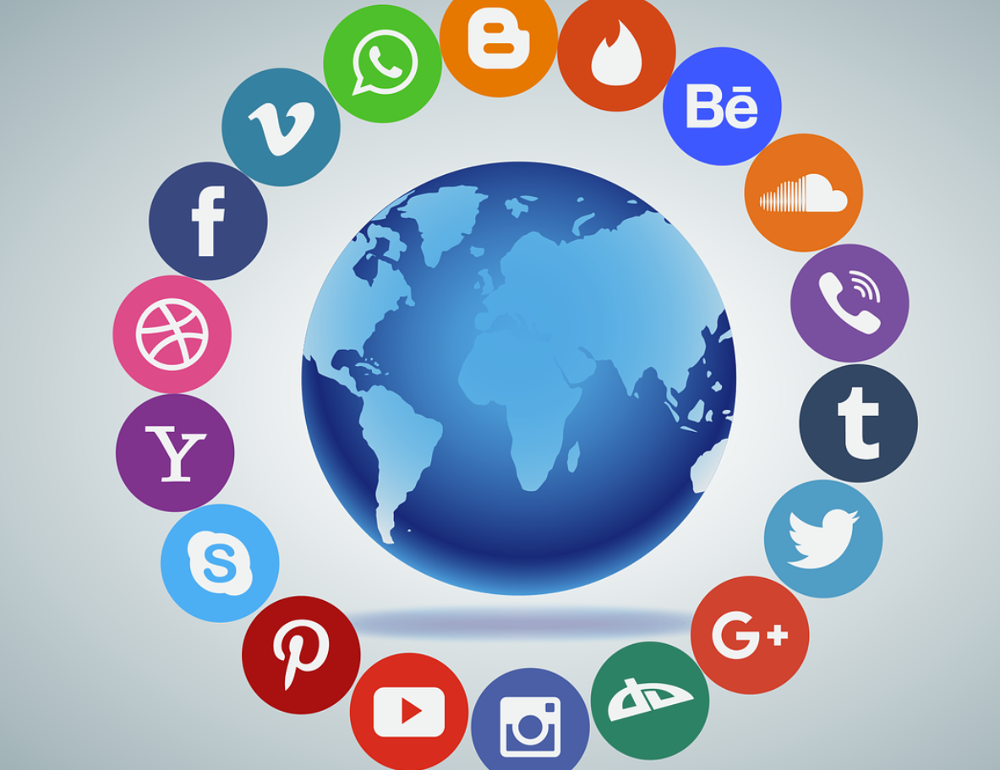
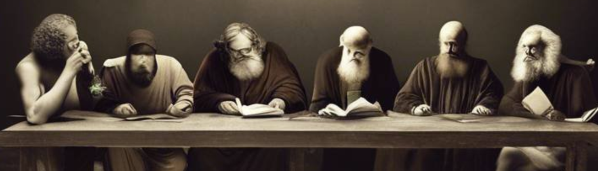

Social Media and its effects
September 31, 2025 by Shantae Saddler

According to Charon (1990), Sociology is an academic discipline that examines the human being as social, a result of interaction, socialisation and social patterns.
Social media offers a new avenue for human interaction, creating new behaviours for sociologists to study. Social media began as an interaction between people using new forms of technology,
and the conversations became increasingly public. Interactionists believe that individuals create their social worlds through interacting with others. The ongoing process of interaction means that individuals
are constantly adjusting to each other. Social media has revolutionised the way people communicate and socialise on the web. The use of social media has the potential to affect the social skills of students as well as academic performance both positively and negatively.
This is because face-to-face communication is no longer required as a means to interact and communicate with others.
Mustapha (2013) defines socialization as the process whereby individuals learn about the culture of their society, in addition to “behaviours that are acceptable and those that are not.” (p.25).
One source consists of a magazine article “The Professional Side Effects of Social Media” published on February 18, 2020 by Eric Beichler. According to Beichler (2020), today’s generation has lost the ability and the need to genuinely communicate with each other face to face.
The impacts are both personal and professional. Beichler (2020) talks about how there is a problem of finding it hard to get to know each other through texting. We are not developing life skills in young people today to properly articulate messaging and meaningful communication.
We have lost the value and the need to focus on the individual we are speaking with or communicating with at the time of interaction. We have also not found enough free space in daily schedules to sit and visit with each other. Everyone and everything is moving so fast,
while results need to be measured and tasks completed before the end of the day.
The Influence of Social Media on Philosophy
October 02,2025 by Shantae Saddler

Social media serves as a platform for emerging philosophical movements. We investigate how these movements gain traction and influence through digital channels. The ability to quickly share ideas and mobilize support has allowed philosophical movements to flourish in ways that were previously unimaginable.
From existentialism to postmodernism, these movements are not just academic; they are living, breathing conversations that evolve in real-time. The ethical implications of social media usage are profound. This section delves into the moral responsibilities of individuals and platforms in shaping philosophical thought.
As users, we must consider the impact of our online behavior on others and the broader discourse.The impact of surveillance on personal freedom raises philosophical questions. We examine how social media's data practices challenge concepts of privacy and autonomy. In an age where our every click is monitored,
what does it mean to be free? The tension between connectivity and privacy is a philosophical dilemma that deserves our attention.
Finally, social media has become a tool for activism, intertwining philosophy with social justice movements. This section discusses the philosophical underpinnings of digital activism and its implications for society. Activism in the digital age not only raises awareness
but also challenges us to think critically about our roles in societal change.